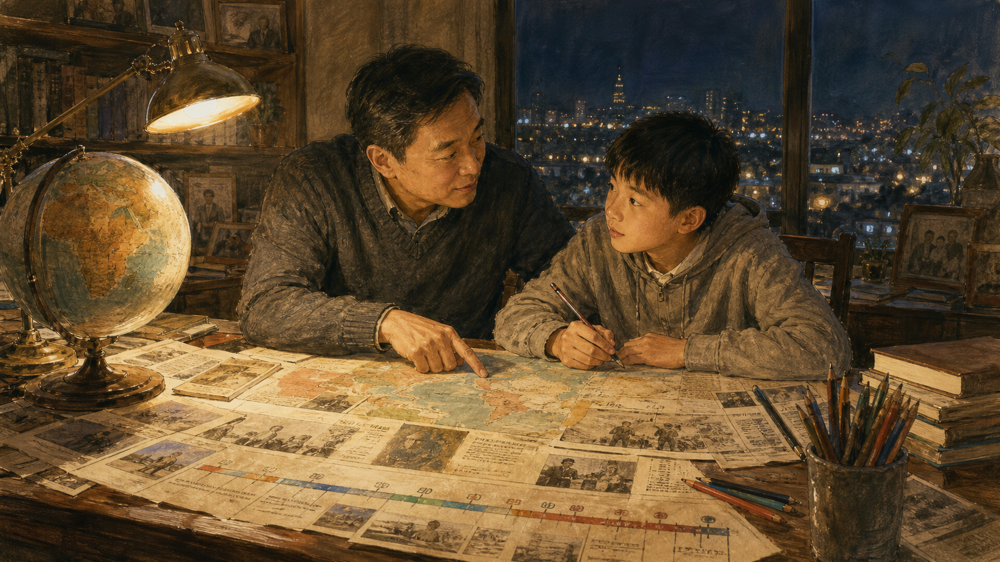

关键地点关系
1987年冬天，一位在台北生活近四十年的老人终于拿到赴大陆探亲的许可。行李不多，地址却写了好几遍：故乡的门牌也许早已改过，父母是否还在，他不敢问。机场里有人抱着照片，有人带着给侄辈的糖果。对报纸来说，这是“开放赴大陆探亲”；对一个家庭来说，却是把1949年突然中断的人生重新接上。理解台湾问题，要从这样的时间长度开始：国家制度可以一夜分开，亲情、记忆和认同却不会按同一张日历变化。

在“台湾问题”以前，先有一座多层岛屿
台湾不是等待某个现代国家来命名的空地。南岛语族原住民族已在岛上生活数千年，不同部落有自己的语言、土地关系与政治组织。十六、十七世纪，东亚海商、渔民、海盗与欧洲公司在台湾周边活动；荷兰东印度公司自1624年在南部建立统治，西班牙人一度据有北部。殖民者为贸易征税、传教、测量土地，也引入更多来自福建、广东的移民耕作。疾病、战争与土地扩张则改变原住民族生活。
1662年，郑成功驱逐荷兰人，以台湾作为反清基地；1683年郑氏政权败于清朝，次年清廷将台湾纳入福建行政体系。清政府起初限制移民，后来面对不断增加的汉人聚落、原住民土地冲突与地方反抗，统治逐步深入。1885年，台湾建省。铁路、电报、港口和防务建设开始推进，但国家能力在不同地区很不均衡，山区和东部并未因此被同样控制。
这一长段历史不能被压成“自古以来”或“从未相关”两个按钮。清朝对台湾有延续二百余年的行政统治，是重要历史事实；原住民族早于这些政权存在，也同样是事实；欧洲殖民、郑氏海上政权与跨海移民又使岛屿从来不是封闭单元。历史能够解释各方为何重视连续性，却不能跳过近代条约、战后安排和后来居民政治经验，直接替今天写下唯一答案。
史料怎样说话
古地图上的名称、王朝设置的官署、移民族谱与原住民族口述各自回答不同问题。看到一份材料时，先问它证明“有人到过”“有人定居”“国家行政”，还是“今天的法律权利”。把证据的作用说窄，反而更可靠。
割让、殖民与半个世纪的改变
1894—1895年甲午战争中，清朝战败。《马关条约》规定清政府将台湾及澎湖等割让给日本。台湾居民没有参加谈判，岛内出现抵抗，日本军队以武力接管。此后直到1945年，台湾处于日本殖民统治之下。总督拥有广泛行政、立法与警察权，早期尤其带有军事统治色彩；反抗者与原住民族社区遭到镇压，土地、森林和人口被重新调查与控制。
殖民政府修铁路、港口、水利和公共卫生系统，推广学校教育，发展糖、米等出口产业。这些建设提高交通与生产能力，也服务日本帝国的财政、市场和战争需求。教育与就业按族群分层，台湾人难以拥有与日本人完全平等的政治权利。后期“皇民化”要求语言、姓名、宗教仪式和战争动员向日本认同靠拢，许多人被征用或参军。殖民现代化与殖民压迫不是二选一：同一条铁路可以方便居民，也可以更有效运走资源和军需。
五十年足以塑造一代人的日常。有人在日语学校成长，有人在警察制度下感到恐惧，有地主从商品农业获益，也有农民因土地和市场变化受损；原住民族面对更深入的山地控制。1945年日本战败时，岛上居民对未来的期待并不相同。后来有人记得秩序和基础设施，有人记得歧视与战争动员。历史教育若只保留其中一面，便会把复杂生活改造成今天政治立场的证词。
发展叙事看到的
铁路、卫生、学校和产业体系加速现代转型，留下可见制度遗产。
殖民经验提醒的
建设目标、权力分配与居民权利不平等；“有效治理”不能自动洗去强制。
接收为何很快变成裂痕
1943年《开罗宣言》表达盟国要使台湾、澎湖归还中华民国的意图，1945年《波茨坦公告》要求实施相关条款，日本投降后，中华民国政府受盟军统帅指示在台湾接受日军投降并开始行政接管。许多台湾居民起初欢迎脱离日本统治，却很快面对官员腐败、物资管制、恶性通胀、失业和文化隔阂。来自大陆的接收者有时把受过日本教育的本地人视为不可靠，本地人则认为新的政府不理解社会。
1947年2月27日，台北一场查缉私烟冲突引发民众死亡，抗议迅速扩散。地方人士提出改革要求，政府从大陆调兵镇压。二二八事件中，大量平民、学生与地方精英被杀害、逮捕或失踪，准确人数因记录不全而有范围差异。国家暴力不仅夺走生命，也让家庭数十年不敢谈论。今天的纪念、赔偿、档案开放与转型正义，正是在处理这段长期被压抑的记忆。
事件不能被简化为单一族群天生冲突。地方治理失败、战后经济混乱、官民不信任、省籍差异和中国内战压力相互叠加；抗议者的主张也从惩治腐败、扩大自治到更激进方向不等。说明结构原因不是替镇压免责，追究国家责任也不等于把每个后来台湾的大陆移民家庭视为加害者。历史责任应指向具体制度、命令与行为，不能遗传给没有参与的人。
父子暂停一下
一项纪念活动应更重视查明责任、赔偿家庭，还是帮助不同群体重新共处？三者会冲突吗？如果档案不完整，我们应怎样既承认不确定，又不让受害者再次消失？
1949年的分治为何延续至今
1949年中国内战形势逆转，中国共产党在北京建立中华人民共和国，中华民国中央政府迁往台北。中华人民共和国控制中国大陆，中华民国政府继续控制台湾、澎湖、金门、马祖等地。两边都曾主张代表全中国，海峡之间没有签署结束内战的和平条约。这种“实际分治、法律与政治主张冲突”的结构，成为台湾问题的核心。
台湾自1949年起长期实行戒严，政府以反共、战争威胁和动员体制为理由限制政党、出版和集会。白色恐怖期间，许多人因真实或被指控的共产党联系、异议思想和政治活动遭逮捕、军事审判、监禁甚至处决。与此同时，大量军民从大陆来到台湾，带着失去故乡的创伤，也进入权力、军队和社会分配体系。台湾社会在共同生活中融合，又留下省籍、语言与记忆的不平等。
海峡并不安静。1954—1955年与1958年台海危机围绕金门、马祖等岛屿爆发炮战，并把美国卷入威慑。冷战使台湾成为美国东亚战略的一环，中华人民共和国则把完成统一视为内战未竟目标与国家主权问题。对台湾居民来说，大国保护提高安全，也意味着命运受外部战略变化影响；对北京来说，外部军事介入被视为分裂延续的重要原因。
分治还改变家庭。早期几乎没有正常通信和探亲，有人每天听广播猜亲人是否仍在，有人因政治审查隐瞒大陆关系。政府宣传把对岸塑造成单一敌人，普通人真实生活却比宣传复杂。1987年开放赴大陆探亲时，许多重逢同时带着陌生：口音、财产、婚姻和人生选择已经分开近四十年。政治上的“同胞”并不能自动取消生活上的距离。
联合国第2758号决议解决了什么
1945年联合国成立时，中华民国是创始会员国并拥有安理会常任理事国席位。1949年后，台北继续占据“中国”席位，越来越多国家却与北京建交。1971年10月25日，联合国大会通过第2758号决议，恢复中华人民共和国在联合国的一切权利，承认其政府代表是中国在联合国的唯一合法代表，并驱逐“蒋介石的代表”。此后，北京取得中国席位与常任理事国席位，台北退出联合国体系。
中华人民共和国政府认为，决议从政治、法律和程序上彻底解决了包括台湾在内全中国在联合国的代表权问题，任何“两个中国”或“一中一台”安排都违反一个中国原则。台湾当局与一些支持其国际参与的政府则强调，决议没有决定台湾人民在国际组织中的代表，也没有授权中华人民共和国代表从未受其治理的台湾。联合国机构的实际做法通常依据第2758号决议承认北京代表中国，台湾参与则依组织规则和政治协商而异。
读决议应分三层。第一是原文确实决定了什么；第二是联合国和成员国后来怎样实践；第三是各政府赋予它什么政策含义。把原文没有的句子说成逐字写明，不准确；因为文本未逐字处理台湾就说决议对现实毫无影响，也不准确。它改变了外交承认与国际组织入口，深刻压缩台北的正式外交空间，同时没有让海峡两边的实际治理合并。
一分钟核对原文
遇到“某决议已经证明全部问题”的说法，先打开联合国数字图书馆，读标题、正文、通过日期和投票对象，再区分决议文字与发言记录。政治争论可以引用文件，却不能替文件补写句子。
美国的“一中政策”为何总被误读
1972年中美《上海公报》中，双方分别陈述立场；美方表示认识到海峡两边所有中国人都认为只有一个中国、台湾是中国的一部分，并对这一立场不提出异议。1979年建交公报中，美国承认中华人民共和国政府是中国唯一合法政府，并“承认到”中方关于只有一个中国、台湾是中国一部分的立场，同时与台湾维持文化、商业等非官方关系。中文讨论常把“承认中华人民共和国政府”与“承认到中方立场”混成同一种承认，容易失去文字差别。
美国国会1979年通过《台湾关系法》，以国内法维持对台非官方关系，规定向台湾提供防御性物资与服务，并把任何以非和平方式决定台湾前途的努力视为严重关切。1982年中美第三个联合公报处理军售问题，美方同年又向台北提出“六项保证”。这些安排没有形成普通共同防御条约，也没有简单承诺一定或一定不介入，后来常被概括为“战略模糊”。
模糊试图同时约束两种冒险：让北京不敢相信可以低成本使用武力，也让台北不确信任何政治行动都会得到无条件军事支持。支持者认为不确定性增加威慑，批评者认为危机中可能误判。更复杂的是，美国政策还受国会、总统、盟友与地区力量变化影响；一句竞选讲话、一次军售或访问，都可能被不同一方解读为承诺改变。
其他国家多承认中华人民共和国政府并与台湾保持不同程度的非官方经贸、文化关系。外交承认、经济往来、国际组织参与和对台湾最终地位的法律看法并非总是同一件事。新闻若只问“这个国家支持哪一边”，就会漏掉各国在不同文件中刻意保留的差别。
台湾民主化怎样改变问题本身
经济发展先改变社会。土地改革、美国援助、出口工业化、教育普及和中小企业成长，使台湾在二十世纪后半叶快速提高生活水平。工厂女工、家庭代工、技术人员和企业家共同创造所谓“经济奇迹”，成本则包括长工时、污染、劳工权利不足与城乡迁移。政府以发展成绩建立合法性，成长起来的中产、学生、律师、劳工和地方社会又要求更大政治参与。
1970至1980年代，党外人士、杂志与社会运动挑战一党威权。1979年美丽岛事件后，许多反对派人士受审，镇压反而让民主诉求更受关注。民主进步党在禁党令尚未解除时于1986年成立，政府没有全面取缔；1987年解除戒严，随后开放报禁、党禁并逐步终止动员戡乱体制。1991至1992年，长期未全面改选的中央民意机关完成改选；1996年，台湾举行首次总统直接选举。
民主化把“谁能决定台湾未来”变成台湾内部选举的核心问题。过去，国民党政权以代表全中国与反攻大陆说明统治；后来宪政制度逐步本土化，实际选民范围与有效治理区域更加一致。政党轮替、地方认同和公民社会使任何两岸安排都很难只由少数领袖决定。北京则认为台湾主权属于全体中国人民，不能以台湾地区投票改变国家领土完整。两种“人民是谁”的定义在这里直接碰撞。
台湾内部也没有一个固定声音。国民党通常更强调中华民国宪政、交流与降低冲突；民进党强调台湾主体性、民主选择与抵抗中华人民共和国压力；台湾民众党及其他团体提出不同的务实或中间路线。各党内部仍有光谱，选民还会因经济、世代、战争风险与候选人而改变选择。2024年总统选举有三组主要候选人，结果与立法院席次分布也提醒我们：一次选举不能把所有居民意见压成一句话。
越靠近，为什么不一定越一致
1987年开放探亲后，两岸人员、书信与贸易逐步增加。1992年台湾制定《台湾地区与大陆地区人民关系条例》，以“台湾地区”和“大陆地区”处理分治下的民事、经贸与人员问题。两岸授权机构在1990年代会谈，2008年后直航、旅游和经贸联系加速，2010年签署海峡两岸经济合作框架协议。台商在大陆设厂，大陆市场成为台湾重要出口目的地，婚姻、求学和就业让抽象海峡进入日常。
交流没有自动消除政治差异。一些人从语言、亲缘与商业机会感到连结，一些人担心经贸依赖转化为政治压力；大陆游客与学生带来真实相遇，也出现制度与社会习惯冲突。2014年台湾太阳花运动反对两岸服务贸易协议的审议方式，既包含程序民主诉求，也反映对经济整合风险的焦虑。2019年香港局势又影响许多台湾人对“一国两制”的判断。
认同变化不是某位政治人物一天“制造”的。日本殖民记忆、1949年移民、民主化、本土语言复兴、国际处境、世代经验和北京政策共同作用。政治大学长期调查显示，自认“台湾人”、同时认同或自认“中国人”的比例会随时间变化；调查问题、抽样与当时事件也会影响答案。身份可以是文化、法律、国家或生活经验，不应把一个标签直接等同于对统一、独立或战争的完整态度。
截至2026年，两岸贸易仍规模巨大，但台湾出口市场与对外投资结构出现调整，企业在美国、日本、东南亚等地增加布局。降低集中风险不等于经济联系消失，继续贸易也不代表政治互信上升。对普通家庭而言，紧张可能表现为航班减少、工作变化、亲属往来受限或网络争执；宏观“脱钩”一词往往遮住每个行业不同的替代成本。
父子暂停一下
如果经济交流能增加彼此了解，也可能形成依赖，你会用哪些指标判断它更接近“和平纽带”还是“施压工具”？贸易额够不够，还要看哪些人的选择和风险？
军舰、芯片与普通人的不安全感
中华人民共和国政府把统一列为国家目标，主张以和平方式实现，但不承诺放弃使用武力；2005年《反分裂国家法》和2022年台湾问题白皮书说明了这一立场。台湾的民选政府强调维持现状、强化自我防卫与民主生活方式，并依不同时期政策使用不同表述。双方都说反对改变现状，却对“现状”包含什么、谁正在改变它有相反判断。
近年解放军在台湾周边的海空活动与演训增加，台湾加强后备、军购和社会韧性，美国及盟友关注海峡和平稳定。威慑希望让任何一方相信动武代价太高，却也让军机、军舰和导弹在更小空间内频繁活动。一次误判、事故或错误情报可能从战术事件升级为政治危机。真正的安全不只包括武器数量，还包括热线、透明信号、民用基础设施、能源库存和社会面对谣言时的稳定。
半导体让世界更关注台湾。台积电开创专业晶圆代工模式，台湾聚集先进制造、封装、设备供应和工程人才，许多全球电子产品依赖这套生态。“硅盾”说法认为这种重要性会提高外部保护意愿；但工厂并非魔法盾牌，战争会切断电力、水、物流和人员，任何一方都难完整取得产能。各国推动制造多元化，也不能在短期复制几十年形成的产业网络。
讨论最容易陷入两个极端：一边相信经济代价太高所以绝不会开战，另一边把每次军演写成战争倒计时。前者低估民族主义、误判和安全困境，后者则让长期警报消耗社会判断。负责任的风险分析要标日期、分清演习与动员、观察后勤和政治信号，并承认外界无法知道所有决策。准备危机不等于预测危机一定发生。
普通人的任务也不是每天猜开战日期。家庭可以知道避难信息、备份证件和药物，学校与企业可以设计连续运营，媒体可以建立更严格的核查，政府必须说明资源分配并保护正常民主讨论。若安全之名让所有异议都被当作敌对渗透，社会会失去要保护的开放；若把真实军事压力全部说成选举操弄，又会忽略必要准备。韧性是在警惕与自由之间建立可纠正制度。
用六面镜子观察台湾新闻
第一面是时间镜：这件事从1895、1945、1949、1971、1987还是今天开始讲？不同起点会突出不同责任。第二面是地图镜：新闻发生在台湾本岛、金门马祖、台湾海峡中线附近，还是更广西太平洋？地理距离会改变军事、交通与居民经验。第三面是文字镜：原始文件写的是“承认”“承认到”“主张”“反对”还是“保留”？一个动词可能就是外交空间。
第四面是制度镜：说话者是中华人民共和国政府、台湾某届政府、某个政党、美国行政部门、国会、联合国机构，还是学者？它有何权力，文件是否有法律效力？第五面是生活镜：政策会怎样影响渔民、军人、台商、陆生、跨境家庭、原住民族和下一代？第六面是证据镜：照片何时何地拍摄，数字口径是什么，消息能否回到原文，反方最强证据是什么。
还要给结论标置信心。可以确定的是海峡两边由不同政府长期实际治理、政治制度不同、没有结束分治的和平协议；存在争议的是主权与代表权的完整法律解释、各方政策文字的外延；高度不确定的是领导人未来决策、战争概率和危机触发点。把三类内容混在一起，观点就会伪装成事实，预测也会伪装成历史。
最后回到1987年的机场。老人跨过海峡见到亲人，并没有替所有政治问题找到答案；他只是证明，任何宏大方案都要穿过具体人生。台湾问题涉及中国近代史、战后国际秩序、台湾民主与地区安全，不能靠一句口号关闭。历史真正能教我们的，是把来由讲清，把影响看见，把不同主张放回原文，并在最激烈的争论中记得：海峡两边首先住着人。
理解不是放弃立场，而是让立场经得起历史、证据与他人生命的检验。
关灯前，聊六个没有标准答案的问题
- 为什么1895、1945和1949三个年份，会让人对台湾历史形成不同重点？
- 殖民时期留下的基础设施值得肯定时，怎样避免因此淡化不平等与强制？
- 第2758号决议的原文、后来联合国实践和各国政策解释，为什么必须分开？
- 台湾民主化以后，两岸政治安排是否必须获得台湾选民同意？北京为何给出不同答案？
- 经贸联系在什么条件下促进和平，在什么条件下会变成脆弱性或压力？
- 你认为“维持现状”至少应包含哪些可观察行为，才能避免各说各话？
来源与延伸阅读
- 日本国立公文书馆：《马关条约》原件与解说——1895年割让条款的官方档案。
- 日本国立公文书馆：台湾总督府条例与“六三法”——殖民统治权力结构的原始法令。
- 台湾国家人权博物馆：White Terror Period——二二八、戒严与白色恐怖时间线。
- 台湾“总统府”：《中华民国宪法》——理解现行宪政文字与权利结构的原始文本。
- 台湾“总统府”：民主化与社会运动回顾——戒严解除、国会改选与总统直选历程。
- 联合国数字图书馆：大会第2758号决议——1971年中国代表权决议原文与记录。
- 中国国务院新闻办公室：《台湾问题与新时代中国统一事业》——中华人民共和国政府现行政策立场。
- 中国政府网：《反分裂国家法》——有关统一与非和平方式条件的法律文本。
- 台湾大陆委员会：《台湾地区与大陆地区人民关系条例》——台湾现行两岸关系法律框架。
- 美国国务院历史办公室：1979年中美建交公报——承认、非官方关系与和平解决文字。
- 美国政府出版局：《台湾关系法》——美国国内法原文。
- 美国在台协会：1982年“六项保证”解密电报——美国政策结构的另一组文件。
- 台湾中央选举委员会：2024年总统选举结果——选票、投票率与候选人数据。
- 政治大学选举研究中心：台湾人／中国人认同趋势——附方法说明的长期调查。
- 台湾大陆委员会：两岸经济关系统计——贸易、投资与人员往来月度资料。
- 台积电：2025年度报告——制造布局、客户与产业事实。